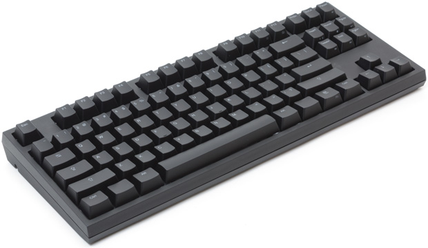

Mechanical Keyboards
Early last year, I purchased two Code Keyboards (one for work and one for home). The Code Keyboards are designed by Jeff Atwood (who founded Stack Overflow). Mechanical keyboards are “old style” in that the switches are from an era where everything was mechanical, unlike today where everything is glass. So mechanical keyboards have ardent fans and people who don’t really care for them.

I did a lot of research before I purchased, talking to various people in work who are very knowledgeable about mechanical keyboards (The best community for advice, discussion and group buys is /r/mechanicalkeyboards on reddit.). The variety of hardware and opinions is positively mind melting. If you are doing your own research, you should definitely come across Cherry switches (a very established German brand). Switches are what sit between your key that you see (with the letter printed on top) and the electronic board that converts the key press to a signal the computer can understand.

Another big brand in the mechanical world is Ducky, a Taiwanese company who make predominantly mechanical keyboards. They are known for their quality and the variety (lights, amount of keys [102, 104] etc). For my part, I decided on not buying a big brand like Ducky or Das Keyboard, but to go with the Code Keyboard, as this matched what I wanted.
While searching I decided on factors to suit me:
- No fancy light displays
- Should be backlit
- Compact size
- Should look professional
- No fancy non-standard media keys ( I want it to work with any computer out of the box).
- Shouldn’t be too noisy (I respect my colleagues right to peace and quiet!!!)
The Code Keyboard matched all of these. Over a year later I’m very happy with them still, I would recommend them. Not least as I had a micro usb cable go bad, but WASD Keyboards (who make the Code Keyboard) sent me a free replacement, providing good customer service.